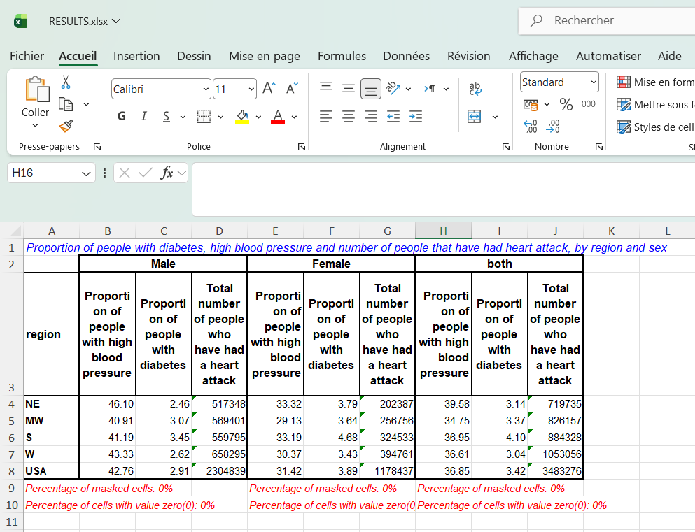

What is agristoolkit?
In this example, we use the nhanes2 dataset to generate long-format tables presenting key health indicators in the United States, disaggregated by region, sex, and area of residence.
Part I: Generation of machine-readable multi-dimensional table
- Proportion of people with diabetes (percentage)
- Proportion of people with high blood pressure (percentage)
- Total number of people who have had a heart attack (count)
All indicators are disaggregated by region, sex, and residence (urban/rural), which define the estimation domains.
* Load example dataset
webuse nhanes2, clear
* Define and apply value labels
label define rur 1 "Urban" 2 "Rural"
label values rural rur
* Defining the sampling design
svyset psu [pw=finalwgt], strata(strata)
* Generate multi-dimensional table
genmdt region sex rural , marginlabels("region@USA" "sex@both") ///
mean(highbp diabetes) total(heartatk) integer(heartatk) ///
units("highbp@%" "diabetes@%" "heartatk@people") ///
indicator( ///
"highbp@Proportion of people with high blood pressure" ///
"diabetes@Proportion of people with diabetes" ///
"heartatk@Total number of people who have had a heart attack" ///
)
* Display first observations

Part II: Generating an example of table for report
After generating the multi-dimensional statistical table containing indicators across dimensions, now we can use the tab_from_mdt function to generated tables that can feed statistical reports.
* Load example dataset
tab_from_mdt region if rural==2, over(sex) indicator(highbp diabetes heartatk) ///
tabtitle("Proportion of people with diabetes, high blood pressure and number of people that have had heart attack, by region and sex") ///
outfile("test_genmdt.xlsx") replace
